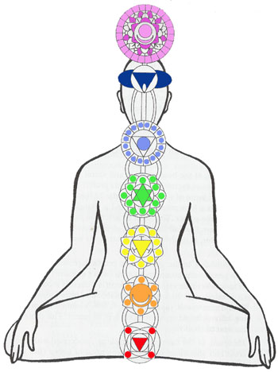

Chakras
Chakras are
the energetic centers of the body. The concept of Chakras
originates from the
Kundalini
theory of esoteric anatomy, and though Hindu in origin was
influential in the developement of Chinese medicine,
Alchemy, and Theosophy. Theosophy brought the concept of the
Chakras to the western world, where it was taken up by the
burgeoning Pagan and New Age movements.
 |
| Chakra |
Color |
Associations |
| Crown |
Violet
(White) |
Spirit/Creation/White Light
Empathy & Connectedness
Top of the Head, The Brain
Nervous System |
| Third Eye |
Indigo |
Psychic Awareness
(outer & inner)
Right Seeing, Right Hearing
Clairvoyance & More
Forehead & Temples |
| Throat |
Blue |
Akasha/Ether
Expression & recieving
Transition from the Physical to the Spiritual
Arms, Legs, Throat & Mouth
Hearing |
| Heart |
Green |
Air
Heart, blood, lungs, circulatory system, immune
system |
| Solar Plexus |
Yellow |
Fire
Ego, Sense of Self
Power & Control Issues
Digestion, Muscles, Skin, Sight (eyes) |
| Sacral Plexus |
Orange |
Water
Desire, Creativity, Pleasure
Wants vs. Needs
Sexual Organs & Lumbar
Taste |
| Root/Base |
Red or Black |
Earth
Foundation, the Seat of Physical Power
Groundedness & Attachment to the Physical World
Security & Survival
Base/Animal Instincts
Perinium, Lower Body, Nose, Organs of Elimination
Smell |
|